03 EL LOOK
Capas quecombinan solas.
Lino, lana y denim en una misma paleta. Así nace un atuendo completo sin esfuerzo: cada pieza ya está pensada para convivir con el resto.
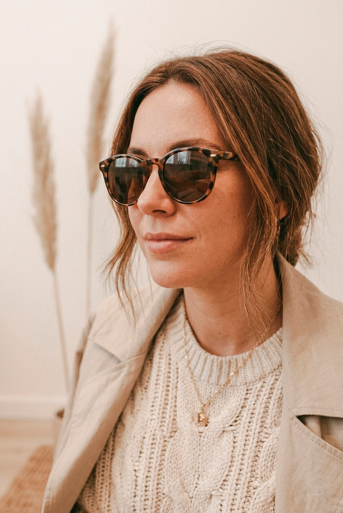
SLOW FASHION · MENDOZA
Un guardarropa atemporal en fibras naturales. Pensado para acompañarte estación tras estación.
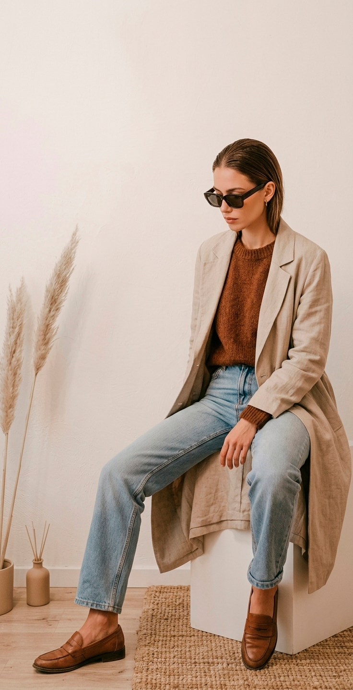
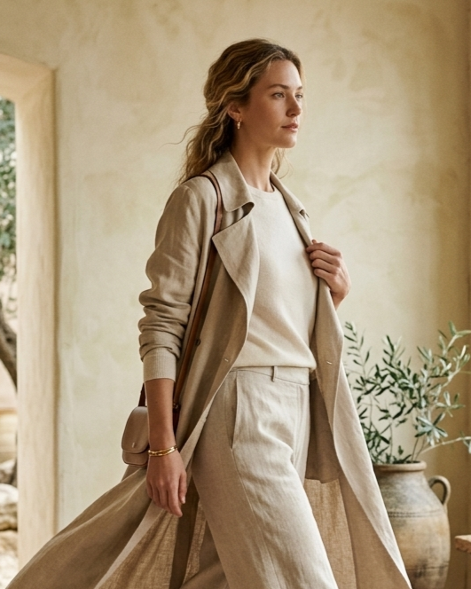
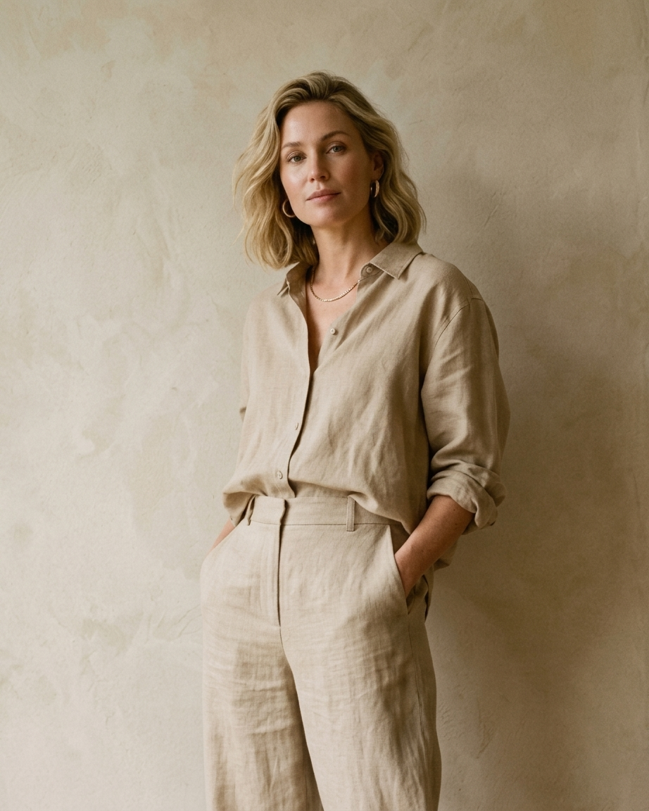
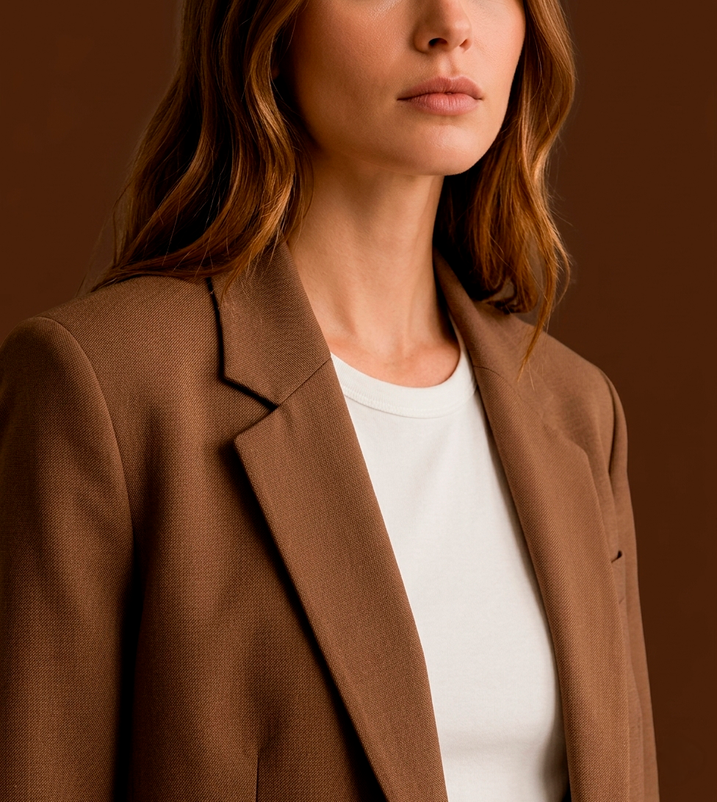
Diseñamos piezas que no compiten con el tiempo. Cada prenda nace para combinarse con las demás, resistir el uso y seguir teniendo sentido temporada tras temporada. Creemos en armar un guardarropa con criterio: comprar menos y elegir mejor.
Una cápsula corta. Cada categoría pensada para convivir con el resto del guardarropa.
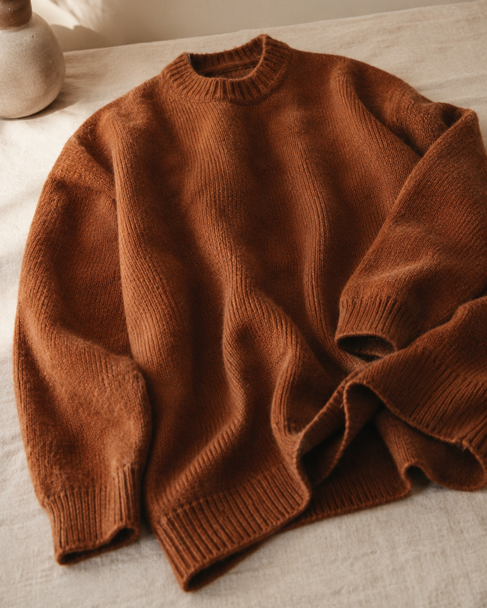
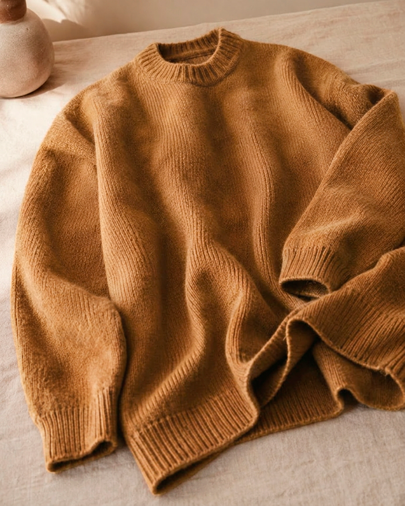
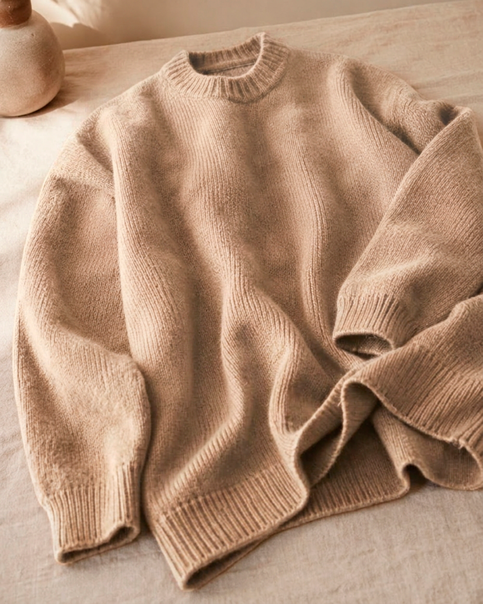
Tejido de punto suave y con caída, en tres tonos de la misma paleta. La pieza que ancla toda la cápsula.
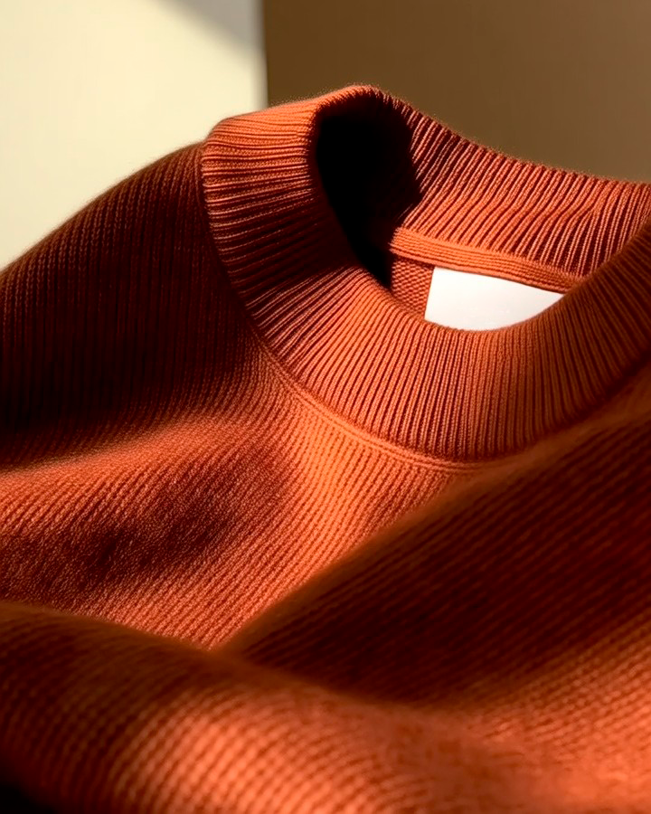
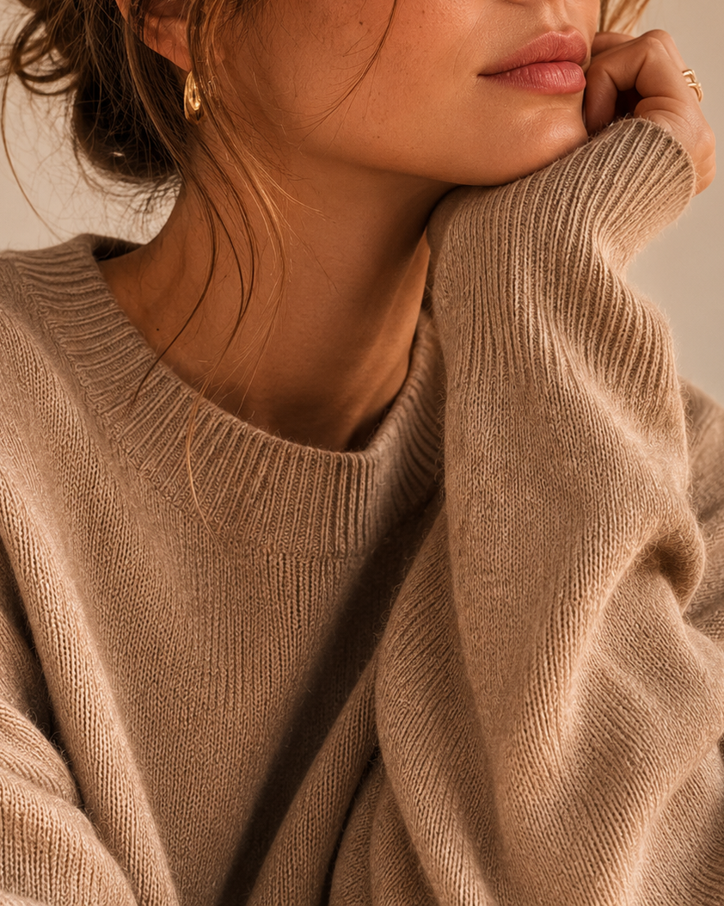
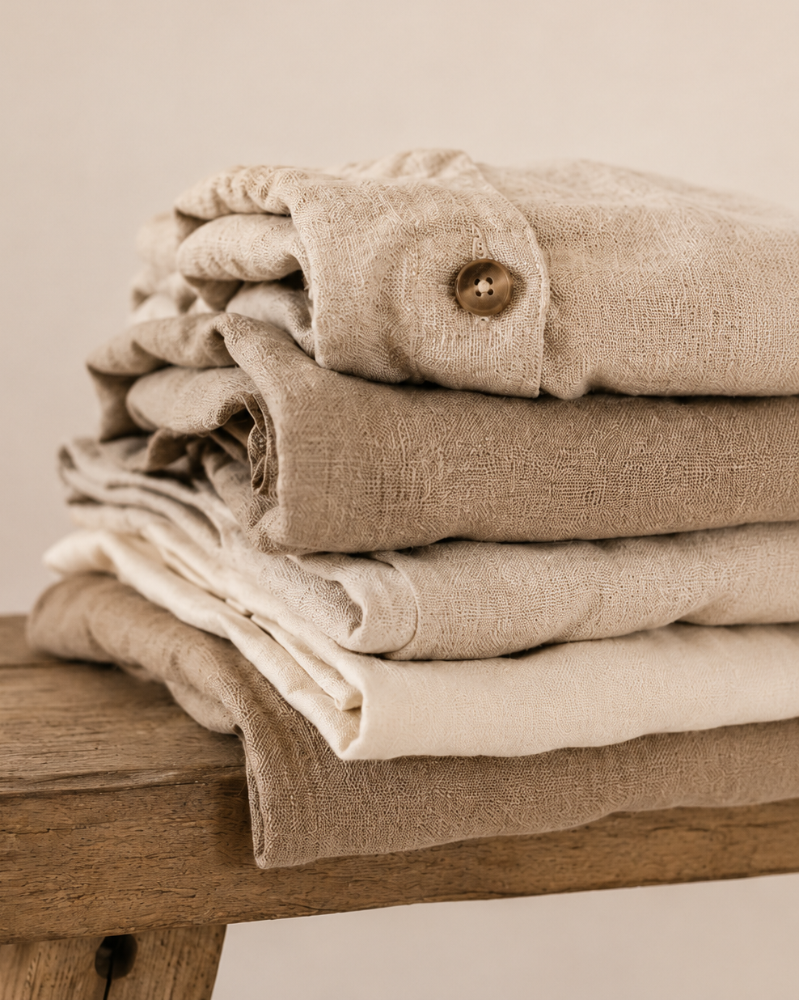
Lino, algodón y lana. Sin atajos sintéticos.
Confección cuidada para años de uso, no de temporada.
Todo combina con todo. Un guardarropa coherente.
Notas sobre materiales, cuidado de prendas y la idea de vestir con menos.
Nuevas piezas, ideas de combinación y acceso anticipado. Sin ruido.